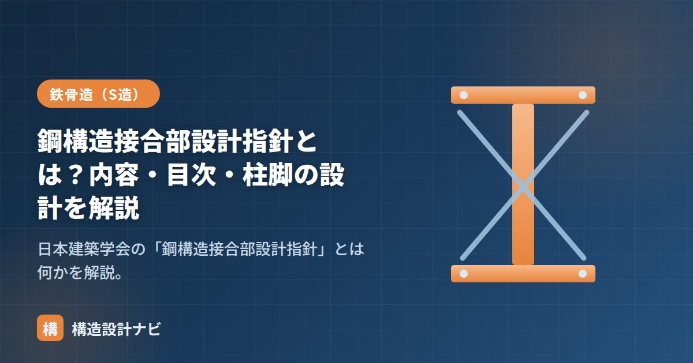

鋼構造接合部設計指針とは？内容・目次・柱脚の設計を解説

鋼構造接合部設計指針は、日本建築学会（AIJ）が発行する、鉄骨造（S造）の接合部に特化した設計の指針です。柱梁接合部・継手・柱脚など、鉄骨造で最も検討が難しい「部材と部材のつなぎ目」の設計法をまとめています。
位置づけ：接合部設計の拠りどころ
鋼構造設計規準が部材設計の基本を定めるのに対し、本指針は接合部の詳細設計を担います。鉄骨造では「接合部は部材より先に壊れてはいけない」という保有耐力接合の考え方が重要で、その具体的な算定方法が示されています。
目次（主な構成）
版によって構成は変わりますが、おおむね次のような内容が扱われます。
| 項目 | 主な内容 |
|---|---|
| 接合部設計の基本 | 保有耐力接合の考え方、応力伝達の原則 |
| 高力ボルト接合 | 摩擦接合・引張接合のすべり・耐力、ボルト配置 |
| 溶接接合 | 完全溶込み・隅肉溶接の耐力、のど厚、欠陥の扱い |
| 継手 | 梁継手・柱継手の応力分担とボルト・溶接の設計 |
| 柱梁接合部 | パネルゾーン、ダイアフラム（通しダイアフラム形式 等） |
| 柱脚 | 露出柱脚・根巻き柱脚・埋込み柱脚の設計 |
柱脚の設計
柱脚は鉄骨柱の力を基礎に伝える重要な部分で、本指針の中心的なテーマの一つです。代表的な3形式があります。
| 形式 | 特徴 |
|---|---|
| 露出柱脚 | ベースプレートとアンカーボルトで固定。施工が容易だが回転剛性は小さめ |
| 根巻き柱脚 | 柱脚まわりをRCで根巻きし剛性・耐力を高める |
| 埋込み柱脚 | 柱を基礎コンクリートに埋め込む。剛性・耐力が大きく固定度が高い |
実務での使い方
- 梁継手・柱継手のボルト本数・溶接サイズを決める根拠として参照する。
- 柱梁接合部のパネルゾーンやダイアフラムの検討に使う。
- 露出柱脚のアンカーボルト・ベースプレートの設計に使う。
- 保有水平耐力（二次設計）の検討で、接合部が先行破壊しないことの確認に用いる。
部材設計の基本は「鋼構造設計規準」、継手の標準は「梁継手・接合部標準図集（SCSS-H97）」、施工は「JASS6」をどうぞ。
よくある質問
Q1. 「接合部は母材より先に壊れてはいけない」とよく言われるのはなぜですか？
接合部（溶接・ボルト）が母材（梁・柱）より先に壊れると、部材が本来持っている粘り（塑性変形能力）を発揮する前に建物が崩壊してしまうためです。そこで接合部は、接合される部材が全塑性に達しても壊れないよう余裕を持たせて（保有耐力接合として）設計するのが原則です。指針はその具体的な検討方法を示しています。
Q2. 柱脚の形式にはどんな種類がありますか？
大きく露出形式・根巻き形式・埋込み形式の3種類があります。露出柱脚はアンカーボルトとベースプレートで固定する最も一般的な形式、根巻き・埋込みはRCで柱脚を固めて剛性・耐力を高める形式です。それぞれ回転剛性や固定度の評価方法が異なり、指針に沿って検討します。
柱脚の形式を選ぶとき、指針どおりに耐力を満たせるかだけでなく、施工のしやすさまで含めて検討するようにしています。露出柱脚は施工が早い分、回転剛性の評価次第で上部架構の応力が変わってくるため、架構全体への影響を必ず確認しています。
まとめ
- 鋼構造接合部設計指針は、日本建築学会による鉄骨接合部の設計指針。
- 高力ボルト・溶接・継手・柱梁接合部・柱脚の設計法を扱う。
- 「保有耐力接合（接合部を先に壊さない）」が基本思想。版は最新版を確認する。